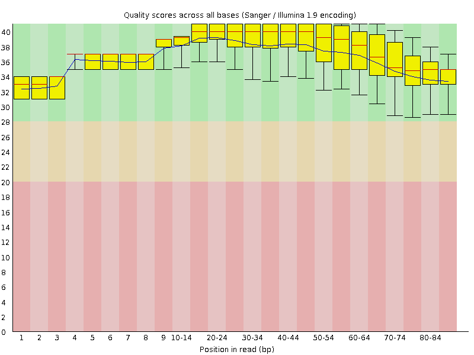
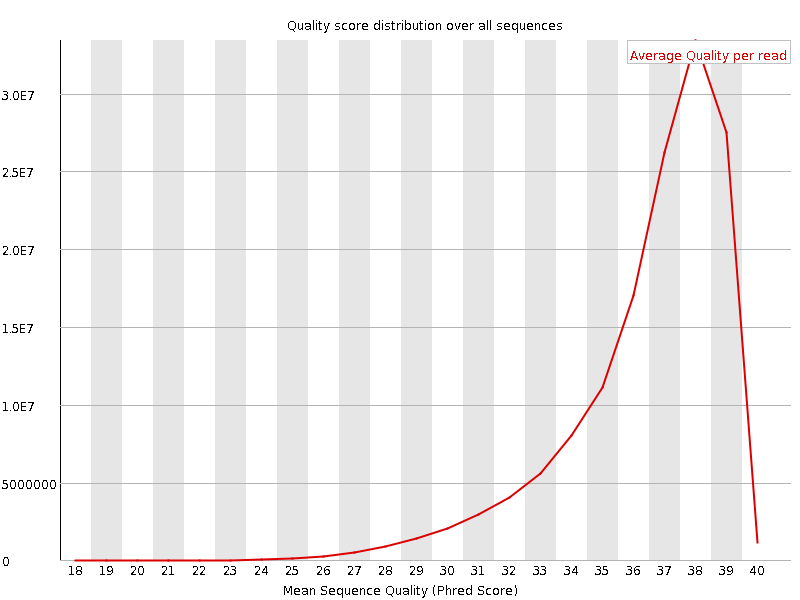
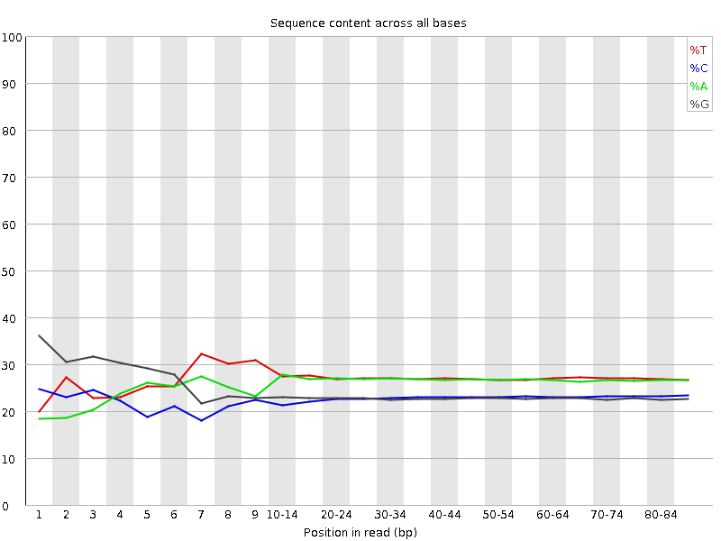
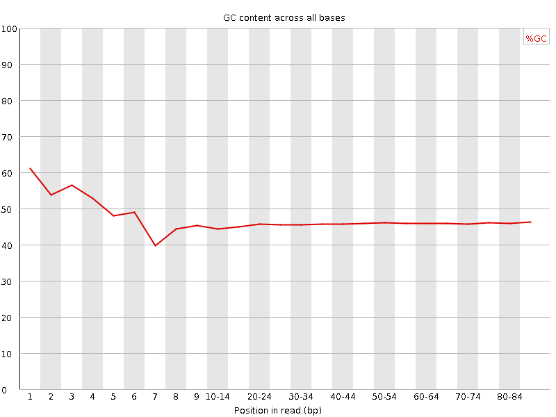
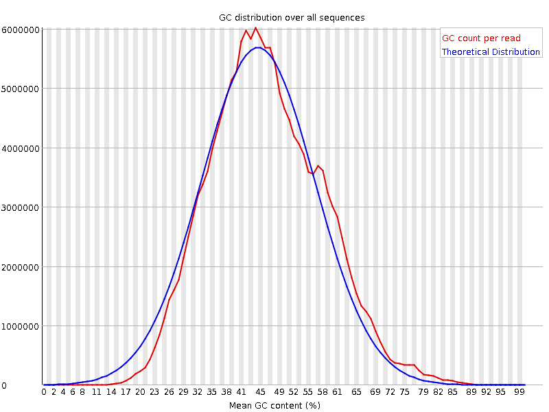
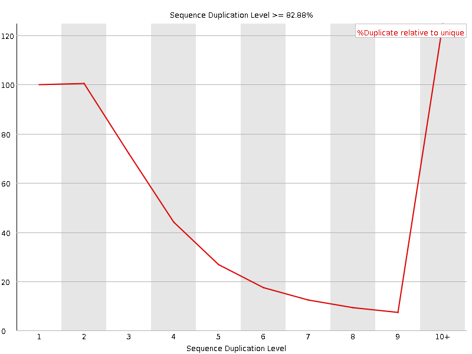
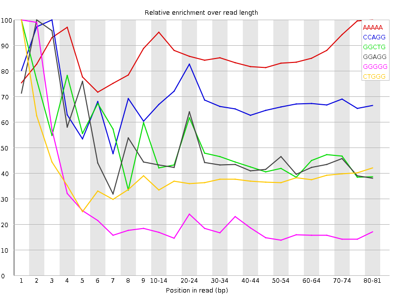

![[OK]](Icons/tick.png) Basic Statistics
Basic Statistics
| Measure | Value |
|---|---|
| Filename | SRR534335_pe_1.f.fastq |
| File type | Conventional base calls |
| Encoding | Sanger / Illumina 1.9 |
| Total Sequences | 142891462 |
| Filtered Sequences | 0 |
| Sequence length | 85 |
| %GC | 46 |
Per base sequence quality

Per sequence quality scores

![[WARN]](Icons/warning.png) Per base sequence content
Per base sequence content

![[FAIL]](Icons/error.png) Per base GC content
Per base GC content

Per sequence GC content

Per base N content

Sequence Length Distribution

Sequence Duplication Levels

Overrepresented sequences
| Sequence | Count | Percentage | Possible Source |
|---|---|---|---|
| GTGAGTTTTAGCTTTATTGGGGAGGGGGTGATCTAAAACACTCTTTACGC | 442249 | 0.30949994758959076 | No Hit |
| GTATAATACTAAGTTGAGATGATATCATTTACGGGGGAAGGCGCTTTGTG | 144042 | 0.10080518316762692 | No Hit |
Kmer Content

| Sequence | Count | Obs/Exp Overall | Obs/Exp Max | Max Obs/Exp Position |
|---|---|---|---|---|
| AAAAA | 46644920 | 3.0314503 | 3.4876933 | 80-81 |
| CCAGG | 26563310 | 3.0061154 | 4.4007945 | 3 |
| GGCTG | 23149535 | 2.5064764 | 5.339479 | 1 |
| GGAGG | 23218025 | 2.4999132 | 5.3866663 | 2 |
| GGGGG | 19997720 | 2.4428318 | 12.271477 | 1 |
| CTGGG | 22533225 | 2.4397466 | 6.352123 | 1 |
| GCTGG | 21883020 | 2.3693469 | 5.6197286 | 1 |
| GGGAG | 20562625 | 2.214003 | 5.321344 | 1 |
| GGCAG | 19535975 | 2.1564858 | 5.1867094 | 1 |
| GGGTG | 17980180 | 1.8989064 | 7.1699944 | 2 |
| TGGGG | 17813395 | 1.881292 | 5.8901563 | 1 |
| GGGGA | 17413145 | 1.8748947 | 7.6004558 | 1 |
| GGGGC | 14192245 | 1.7773627 | 6.033357 | 2 |
| GGGGT | 16265695 | 1.7178377 | 10.052218 | 3 |
| GTGGG | 16010190 | 1.6908535 | 10.666731 | 1 |
| TGGGT | 18377370 | 1.6779896 | 6.4424925 | 2 |
| TTTTA | 26824880 | 1.6137012 | 5.070028 | 6 |
| CGGGG | 12121980 | 1.5180936 | 9.986075 | 1 |
| GTTTT | 20438275 | 1.3948997 | 5.1589165 | 5 |
| GGGTC | 12277480 | 1.3293233 | 6.3322144 | 4 |
| GGTCT | 13971190 | 1.3078297 | 5.260622 | 5 |
| GTGAG | 12791435 | 1.1907357 | 6.1807523 | 1 |
| GGCGG | 8413470 | 1.0536591 | 5.099955 | 1 |
| TAGCT | 12150930 | 1.0025681 | 5.4965596 | 9 |
| GCGGG | 6981280 | 0.8742991 | 6.5520205 | 1 |
| TTAGC | 10348480 | 0.8538488 | 5.2461715 | 8 |